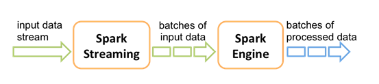

SparkStreaming
Spark Streaming概述
Spark Streaming是什么
Spark Streaming用于流式数据的处理。Spark Streaming支持的数据输入源很多，例如：Kafka、Flume、Twitter、ZeroMQ和简单的TCP套接字等等。数据输入后可以用Spark的高度抽象原语如：map、reduce、join、window等进行运算。而结果也能保存在很多地方，如HDFS，数据库等。
和Spark基于RDD的概念很相似，Spark Streaming使用离散化流(discretized stream)作为抽象表示，叫作DStream。DStream 是随时间推移而收到的数据的序列。在内部，每个时间区间收到的数据都作为 RDD 存在，而DStream是由这些RDD所组成的序列(因此得名“离散化”)。
图中反应数据采集周期是5s，即：每5s汇总一下采集到的数据，然后发送给接收器来封装成一个 DStream 发送给Driver，然后再发送给Executor进行处理。
Spark Streaming特点
易用
容错
易整合到Spark体系
SparkStreaming架构
接收器是不可以停的，一直用来接收数据；同样driver也不能停，得一直处理接收器发送来的DStream
Dstream入门
WordCount案例实操
1．需求：使用netcat工具向9999端口不断的发送数据，通过SparkStreaming读取端口数据并统计不同单词出现的次数
2．添加依赖
<dependency>
<groupId>org.apache.spark</groupId>
<artifactId>spark-streaming_2.11</artifactId>
<version>2.1.1</version>
</dependency>3．编写代码
package com.swenchao.spark.streaming
import org.apache.spark.SparkConf
import org.apache.spark.streaming.dstream.ReceiverInputDStream
import org.apache.spark.streaming.{Seconds, StreamingContext}
/**
* @Author: Swenchao
* @Date: 2020/10/5 下午 09:30
* @Description: 使用 SparkStreaming 完成 WordCount
* @Modified:
* @Version:
*/
object SparkStreaming01_WordCount {
def main(args: Array[String]): Unit = {
// Spark配置对象
val sparkConf = new SparkConf().setMaster("local[*]").setAppName("SparkStreaming01_WordCount")
// 实时数据分析环境对象（第二个参数是采集周期：以指定时间为周期来采集数据）
val streamingContext = new StreamingContext(sparkConf, Seconds(5))
// 从指定端口中采集数据
val lineStreams: ReceiverInputDStream[String] = streamingContext.socketTextStream("hadoop102", 9999)
//将每一行数据做切分，形成一个个单词
val wordStreams = lineStreams.flatMap(line => {
line.split(" ")
})
//将单词映射成元组（word,1）
val wordAndOneStreams = wordStreams.map((_, 1))
//将相同的单词次数做统计
val wordAndCountStreams = wordAndOneStreams.reduceByKey(_+_)
//打印
wordAndCountStreams.print()
// 此时因为是一直采集数据，所以不能停止
// streamingContext.stop
//启动采集器
streamingContext.start()
// driver等待采集器执行
streamingContext.awaitTermination()
}
}在启动以上程序时，得先执行下一步打开hadoop102的9999端口，不然会出现连接失败
4．启动程序并通过NetCat发送数据：
[user_test@hadoop102 spark]$ nc -lk 9999输入以下内容
hello bigData
...查看idea执行窗口效果
注意：如果程序运行时，log日志太多，可以将spark conf目录下的log4j文件里面的日志级别改成ERROR，如下：
[log4j.properties]
log4j.rootLogger=INFO, stdout
log4j.appender.stdout=org.apache.log4j.ConsoleAppender
log4j.appender.stdout.layout=org.apache.log4j.PatternLayout
log4j.appender.stdout.layout.ConversionPattern=%d %p [%c] - %m%n
log4j.appender.logfile=org.apache.log4j.FileAppender
log4j.appender.logfile.File=target/spring.log
log4j.appender.logfile.layout=org.apache.log4j.PatternLayout
log4j.appender.logfile.layout.ConversionPattern=%d %p [%c] - %m%nWordCount解析
Discretized Stream是Spark Streaming的基础抽象，代表持续性的数据流和经过各种Spark原语操作后的结果数据流。在内部实现上，DStream是一系列连续的RDD来表示。每个RDD含有一段时间间隔内的数据，如下图：
对数据的操作也是按照RDD为单位来进行的
计算过程由Spark engine来完成

Dstream创建
Spark Streaming原生支持一些不同的数据源。一些“核心”数据源已经被打包到Spark Streaming 的 Maven 工件中，而其他的一些则可以通过 spark-streaming-kafka 等附加工件获取。每个接收器都以 Spark 执行器程序中一个长期运行的任务的形式运行，因此会占据分配给应用的 CPU 核心。此外，我们还需要有可用的 CPU 核心来处理数据。这意味着如果要运行多个接收器，就必须至少有和接收器数目相同的核心数，还要加上用来完成计算所需要的核心数。例如，如果我们想要在流计算应用中运行 10 个接收器，那么至少需要为应用分配 11 个 CPU 核心。所以如果在本地模式运行，不要使用local[1]。
文件数据源
用法及说明
文件数据流：能够读取所有HDFS API兼容的文件系统文件，通过fileStream方法进行读取，Spark Streaming 将会监控 dataDirectory 目录并不断处理移动进来的文件，记住目前不支持嵌套目录。
streamingContext.textFileStream(dataDirectory)
注意事项：
1）文件需要有相同的数据格式；
2）文件进入 dataDirectory 的方式需要通过移动或者重命名来实现；
3）一旦文件移动进目录，则不能再修改，即便修改了也不会读取新数据；
案例实操
（1）在HDFS上建好目录
[user_test@hadoop102 spark]$ hadoop fs -mkdir /fileStream（2）在/opt/module/data创建三个文件
[user_test@hadoop102 data]$ touch a.tsv
[user_test@hadoop102 data]$ touch b.tsv
[user_test@hadoop102 data]$ touch c.tsv添加如下数据：
Hello bigData
Hello spark（3）编写代码
package com.swenchao.spark.streaming
import org.apache.spark.SparkConf
import org.apache.spark.streaming.dstream.{DStream, ReceiverInputDStream}
import org.apache.spark.streaming.{Seconds, StreamingContext}
/**
* @Author: Swenchao
* @Date: 2020/10/5 下午 09:30
* @Description: 从文件中获取word进行统计
* @Modified:
* @Version:
*/
object SparkStreaming02_FileDataSource {
def main(args: Array[String]): Unit = {
// 1.初始化Spark配置信息
val sparkConf: SparkConf = new SparkConf().setMaster("local[*]")
.setAppName("StreamWordCount")
// 2.初始化SparkStreamingContext
val ssc = new StreamingContext(sparkConf, Seconds(5))
// 3.从指定文件夹中采集数据
val dirStream = ssc.textFileStream("hdfs://hadoop102:9000/fileStream")
// 4.将每一行数据做切分，形成一个个单词
val wordStreams = dirStream.flatMap(_.split(" "))
// 5.将单词映射成元组（word,1）
val wordAndOneStreams = wordStreams.map((_, 1))
// 6.将相同的单词次数做统计
val wordAndCountStreams: DStream[(String, Int)] = wordAndOneStreams.reduceByKey(_ + _)
// 7.打印
wordAndCountStreams.print()
// 8.启动SparkStreamingContext
ssc.start()
ssc.awaitTermination()
}
}
（4）启动程序并向fileStream目录上传文件
[user_test@hadoop102 data]$ hadoop fs -put ./a.tsv /fileStream
[user_test@hadoop102 data]$ hadoop fs -put ./b.tsv /fileStream
[user_test@hadoop102 data]$ hadoop fs -put ./c.tsv /fileStream（5）获取计算结果
-------------------------------------------
Time: 1601907425000 ms
-------------------------------------------
-------------------------------------------
Time: 1601907430000 ms
-------------------------------------------
(Hello,4)
(spark,2)
(bigData,2)
-------------------------------------------
Time: 1601907435000 ms
-------------------------------------------
(Hello,2)
(spark,1)
(bigData,1)RDD队列（了解）
用法及说明
测试过程中，可以通过使用ssc.queueStream(queueOfRDDs)来创建DStream，每一个推送到这个队列中的RDD，都会作为一个DStream处理。
案例实操
1）需求：循环创建几个RDD，将RDD放入队列。通过SparkStream创建Dstream，计算WordCount
2）编写代码
package com.atguigu
import org.apache.spark.SparkConf
import org.apache.spark.rdd.RDD
import org.apache.spark.streaming.dstream.{DStream, InputDStream}
import org.apache.spark.streaming.{Seconds, StreamingContext}
import scala.collection.mutable
object RDDStream {
def main(args: Array[String]) {
//1.初始化Spark配置信息
val conf = new SparkConf().setMaster("local[*]").setAppName("RDDStream")
//2.初始化SparkStreamingContext
val ssc = new StreamingContext(conf, Seconds(4))
//3.创建RDD队列
val rddQueue = new mutable.Queue[RDD[Int]]()
//4.创建QueueInputDStream
val inputStream = ssc.queueStream(rddQueue,oneAtATime = false)
//5.处理队列中的RDD数据
val mappedStream = inputStream.map((_,1))
val reducedStream = mappedStream.reduceByKey(_ + _)
//6.打印结果
reducedStream.print()
//7.启动任务
ssc.start()
//8.循环创建并向RDD队列中放入RDD
for (i <- 1 to 5) {
rddQueue += ssc.sparkContext.makeRDD(1 to 300, 10)
Thread.sleep(2000)
}
ssc.awaitTermination()
}
}3）结果展示
-------------------------------------------
Time: 1539075280000 ms
-------------------------------------------
(4,60)
(0,60)
(6,60)
(8,60)
(2,60)
(1,60)
(3,60)
(7,60)
(9,60)
(5,60)
-------------------------------------------
Time: 1539075284000 ms
-------------------------------------------
(4,60)
(0,60)
(6,60)
(8,60)
(2,60)
(1,60)
(3,60)
(7,60)
(9,60)
(5,60)
-------------------------------------------
Time: 1539075288000 ms
-------------------------------------------
(4,30)
(0,30)
(6,30)
(8,30)
(2,30)
(1,30)
(3,30)
(7,30)
(9,30)
(5,30)
-------------------------------------------
Time: 1539075292000 ms
-------------------------------------------自定义数据源
用法及说明
需要继承Receiver，并实现onStart、onStop方法来自定义数据源采集。
案例实操
1）需求：自定义数据源，实现监控某个端口号，获取该端口号内容。
2）自定义采集器并使用自定义的数据源采集数据
package com.swenchao.spark.streaming
import java.io.{BufferedReader, InputStreamReader}
import java.net.Socket
import org.apache.spark.SparkConf
import org.apache.spark.storage.StorageLevel
import org.apache.spark.streaming.dstream.{DStream, ReceiverInputDStream}
import org.apache.spark.streaming.receiver.Receiver
import org.apache.spark.streaming.{Seconds, StreamingContext}
/**
* @Author: Swenchao
* @Date: 2020/10/6 下午 12:30
* @Description: 自定义采集器
* @Modified:
* @Version:
*/
object SparkStreaming03_MyReceiver {
def main(args: Array[String]): Unit = {
// 1.初始化Spark配置信息
val sparkConf: SparkConf = new SparkConf().setMaster("local[*]")
.setAppName("StreamWordCount")
// 2.初始化SparkStreamingContext
val ssc = new StreamingContext(sparkConf, Seconds(5))
// 3.从指定文件夹中采集数据
val receiverDStream: ReceiverInputDStream[String] = ssc.receiverStream(new MyReceiver("hadoop102", 9999))
// 4.将每一行数据做切分，形成一个个单词
val wordStreams = receiverDStream.flatMap(_.split(" "))
// 5.将单词映射成元组（word,1）
val wordAndOneStreams = wordStreams.map((_, 1))
// 6.将相同的单词次数做统计
val wordAndCountStreams: DStream[(String, Int)] = wordAndOneStreams.reduceByKey(_ + _)
// 7.打印
wordAndCountStreams.print()
// 8.启动SparkStreamingContext
ssc.start()
ssc.awaitTermination()
}
}
// 声明采集器
// 1. 继承Receiver
// 2. 实现方法（onStart、onStop）
class MyReceiver(host: String, port: Int) extends Receiver[String](StorageLevel.MEMORY_ONLY) {
var socket: Socket = _
def receive(): Unit = {
socket = new Socket(host, port)
val reader = new BufferedReader(new InputStreamReader(socket.getInputStream, "UTF-8"))
var line: String = null
while ((line = reader.readLine()) != null) {
// 将采集的数据存储到采集器的内部进行转换
if ( "END".equals(line) ) {
return
} else {
this.store(line)
}
}
}
override def onStart(): Unit = {
new Thread(new Runnable {
override def run(): Unit = {
receive()
}
}).start()
}
override def onStop(): Unit = {
if (socket != null) {
socket.close()
socket = null
}
}
}Kafka数据源（重点）
用法及说明
在工程中需要引入 Maven 工件 spark- streaming-kafka_2.10 来使用它。包内提供的 KafkaUtils 对象可以在 StreamingContext 和 JavaStreamingContext 中以你的 Kafka 消息创建出 DStream。由于 KafkaUtils 可以订阅多个主题，因此它创建出的 DStream 由成对的主题和消息组成。要创建出一个流数据，需要使用 StreamingContext 实例、一个由逗号隔开的 ZooKeeper 主机列表字符串、消费者组的名字(唯一名字)，以及一个从主题到针对这个主题的接收器线程数的映射表来调用 createStream() 方法。
案例实操
需求：通过SparkStreaming从Kafka读取数据，并将读取过来的数据做简单计算(WordCount)，最终打印到控制台。
（1）导入依赖
<dependency>
<groupId>org.apache.spark</groupId>
<artifactId>spark-streaming-kafka-0-8_2.11</artifactId>
<version>2.1.1</version>
</dependency>
<dependency>
<groupId>org.apache.kafka</groupId>
<artifactId>kafka-clients</artifactId>
<version>0.11.0.2</version>
</dependency>（2）编写代码
由于当前未配KafKa，所以还没尝试
DStream转换
DStream上的原语与RDD的类似，分为Transformations（转换）和Output Operations（输出）两种，此外转换操作中还有一些比较特殊的原语，如：updateStateByKey()、transform()以及各种Window相关的原语。
无状态转化操作
无状态转化操作就是把简单的RDD转化操作应用到每个批次上，也就是转化DStream中的每一个RDD。部分无状态转化操作列在了下表中。
注意：针对键值对的DStream转化操作(比如 reduceByKey())要添加以下引用才可使用
import StreamingContext._ 需要记住的是，尽管这些函数看起来像作用在整个流上一样，但事实上每个DStream在内部是由许多RDD(批次)组成，且无状态转化操作是分别应用到每个RDD上的。例如，reduceByKey()会归约每个时间区间中的数据，但不会归约不同区间之间的数据。
举个例子，在之前的wordcount程序中，我们只会统计5秒内接收到的数据的单词个数，而不会累加。
无状态转化操作也能在多个DStream间整合数据，不过也是在各个时间区间内。例如，键 值对DStream拥有和RDD一样的与连接相关的转化操作，也就是cogroup()、join()、leftOuterJoin() 等。我们可以在DStream上使用这些操作，这样就对每个批次分别执行了对应的RDD操作。
我们还可以像在常规的Spark 中一样使用 DStream的union() 操作将它和另一个DStream 的内容合并起来，也可以使用StreamingContext.union()来合并多个流。
有状态转化操作（重点）
UpdateStateByKey
UpdateStateByKey原语用于记录历史记录，有时，我们需要在 DStream 中跨批次维护状态(例如流计算中累加wordcount)。针对这种情况，updateStateByKey() 为我们提供了对一个状态变量的访问，用于键值对形式的 DStream。给定一个由(键，事件)对构成的 DStream，并传递一个指定如何根据新的事件 更新每个键对应状态的函数，它可以构建出一个新的 DStream，其内部数据为(键，状态) 对。
updateStateByKey() 的结果会是一个新的 DStream，其内部的 RDD 序列是由每个时间区间对应的(键，状态)对组成的。
updateStateByKey操作使得我们可以在用新信息进行更新时保持任意的状态。使用这个功能，需要做下面两步：
定义状态，状态可以是一个任意的数据类型。
定义状态更新函数，用此函数阐明如何使用之前的状态和来自输入流的新值对状态进行更新。
使用updateStateByKey需要对检查点目录进行配置，会使用检查点来保存状态。
更新版的wordcount：
（1）编写代码
package com.swenchao.spark.streaming
import java.io.{BufferedReader, InputStreamReader}
import java.net.Socket
import org.apache.spark.SparkConf
import org.apache.spark.storage.StorageLevel
import org.apache.spark.streaming.dstream.{DStream, ReceiverInputDStream}
import org.apache.spark.streaming.receiver.Receiver
import org.apache.spark.streaming.{Seconds, StreamingContext}
/**
* @Author: Swenchao
* @Date: 2020/10/6 14:25
* @Description: 有状态数据统计
* @Modified:
* @Version:
*/
object SparkStreaming04_UpdateState {
def main(args: Array[String]): Unit = {
// 定义更新状态方法，参数values为当前批次单词频度，state为以往批次单词频度
val updateFunc = (values: Seq[Int], state: Option[Int]) => {
val currentCount = values.foldLeft(0)(_ + _)
val previousCount = state.getOrElse(0)
Some(currentCount + previousCount)
}
val conf = new SparkConf().setMaster("local[*]").setAppName("NetworkWordCount")
val ssc = new StreamingContext(conf, Seconds(3))
// 保存数据状态需要设置检查点路径
ssc.checkpoint("/streamCheck")
// Create a DStream that will connect to hostname:port, like hadoop102:9999
val lines = ssc.socketTextStream("hadoop102", 9999)
// Split each line into words
val words = lines.flatMap(_.split(" "))
//import org.apache.spark.streaming.StreamingContext._ // not necessary since Spark 1.3
// Count each word in each batch
val pairs = words.map(word => (word, 1))
// 使用updateStateByKey来更新状态，统计从运行开始以来单词总的次数
val stateDstream = pairs.updateStateByKey[Int](updateFunc)
stateDstream.print()
//val wordCounts = pairs.reduceByKey(_ + _)
// Print the first ten elements of each RDD generated in this DStream to the console
//wordCounts.print()
ssc.start() // Start the computation
ssc.awaitTermination() // Wait for the computation to terminate
//ssc.stop()
}
}（2）启动程序并向9999端口发送数据
[atguigu@hadoop102 kafka]$ nc -lk 9999
ni shi shui
ni hao ma（3）结果展示
-------------------------------------------
Time: 1601967225000 ms
-------------------------------------------
-------------------------------------------
Time: 1601967228000 ms
-------------------------------------------
(shi,1)
(shui,1)
(ni,1)
-------------------------------------------
Time: 1601967231000 ms
-------------------------------------------
(shi,1)
(ma,1)
(hao,1)
(shui,1)
(ni,2)Window Operations
Window Operations可以设置窗口的大小和滑动窗口的间隔来动态的获取当前Steaming的允许状态。基于窗口的操作会在一个比 StreamingContext 的批次间隔更长的时间范围内，通过整合多个批次的结果，计算出整个窗口的结果。

注意：所有基于窗口的操作都需要两个参数，分别为窗口时长以及滑动步长，两者都必须是 StreamContext 的采集周期的整数倍。
窗口时长控制每次计算最近的多少个批次的数据，其实就是最近的 windowDuration/batchInterval 个批次。如果有一个以 10 秒为批次间隔的源 DStream，要创建一个最近 30 秒的时间窗口(即最近 3 个批次)，就应当把 windowDuration 设为 30 秒。而滑动步长的默认值与批次间隔相等，用来控制对新的 DStream 进行计算的间隔。如果源 DStream 批次间隔为 10 秒，并且我们只希望每两个批次计算一次窗口结果， 就应该把滑动步长设置为 20 秒。
假设，你想拓展前例从而每隔十秒对持续30秒的数据生成word count。为做到这个，我们需要在持续30秒数据的(word,1)对DStream上应用reduceByKey。使用操作reduceByKeyAndWindow。
// 以上所说例子
windowedWordCounts = pairs.reduceByKeyAndWindow(lambda x, y: x + y, lambda x, y: x -y, 30, 20)例子：采集周期是3s，一共采集了三次，在第一次中有2个hello，第二次中有3个hello，第三次中有1个hello。窗口大小是9s，每3s滑动一次，hello统计出现情况是：2 5 6 4 1
因为窗口从开始逐渐进来，最后又走出去，试一个逐渐由少到多再到少的过程。
关于Window的操作有如下原语：
（1）window(windowLength, slideInterval)：基于对源DStream窗化的批次进行计算返回一个新的Dstream
（2）countByWindow(windowLength, slideInterval)：返回一个滑动窗口计数流中的元素。
（3）reduceByWindow(func, windowLength, slideInterval)：通过使用自定义函数整合滑动区间流元素来创建一个新的单元素流。
（4）reduceByKeyAndWindow(func, windowLength, slideInterval, [numTasks])：当在一个(K,V)对的DStream上调用此函数，会返回一个新(K,V)对的DStream，此处通过对滑动窗口中批次数据使用reduce函数来整合每个key的value值。Note:默认情况下，这个操作使用Spark的默认数量并行任务(本地是2)，在集群模式中依据配置属性(spark.default.parallelism)来做grouping。你可以通过设置可选参数numTasks来设置不同数量的tasks。
（5）reduceByKeyAndWindow(func, invFunc, windowLength, slideInterval, [numTasks])：这个函数是上述函数的更高效版本，每个窗口的reduce值都是通过用前一个窗的reduce值来递增计算。通过reduce进入到滑动窗口数据并”反向reduce”离开窗口的旧数据来实现这个操作。一个例子是随着窗口滑动对keys的“加”“减”计数。通过前边介绍可以想到，这个函数只适用于”可逆的reduce函数”，也就是这些reduce函数有相应的”反reduce”函数(以参数invFunc形式传入)。如前述函数，reduce任务的数量通过可选参数来配置。注意：为了使用这个操作，检查点必须可用。
（6）countByValueAndWindow(windowLength,slideInterval, [numTasks])：对(K,V)对的DStream调用，返回(K,Long)对的新DStream，其中每个key的值是其在滑动窗口中频率。如上，可配置reduce任务数量。
reduceByWindow() 和 reduceByKeyAndWindow() 让我们可以对每个窗口更高效地进行归约操作。它们接收一个归约函数，在整个窗口上执行，比如 +。除此以外，它们还有一种特殊形式，通过只考虑新进入窗口的数据和离开窗口的数据，让 Spark 增量计算归约结果。这种特殊形式需要提供归约函数的一个逆函数，比 如 + 对应的逆函数为 -。对于较大的窗口，提供逆函数可以大大提高执行效率
其他重要操作
Transform
Transform原语允许DStream上执行任意的RDD-to-RDD函数。即使这些函数并没有在DStream的API中暴露出来，通过该函数可以方便的扩展Spark API。该函数每一批次调度一次。其实也就是对DStream中的RDD应用转换。
map和transform区别
// 在此处写的代码是在driver中执行，只会执行一次
lineStreams.map({
case x => {
// 在此处写的代码是在executor中执行，会执行n次（几个executor就会执行几次）
x
}
})
// 转换
// 在此处写的代码是在driver中执行，只会执行一次
lineStreams.transform({
case rdd => {
// 在此处写的代码是在 driver 中执行，会执行 m 次（每个采集周期中执行一次）
rdd.map{
case x => {
// 在此处写的代码是在executor中执行，会执行n次（几个executor就会执行几次）
x
}
}
}
})比如下面的例子，在进行单词统计的时候，想要过滤掉spam的数据，就要每个周期过滤一下。
val spamInfoRDD = ssc.sparkContext.newAPIHadoopRDD(...) // RDD containing spam information
val cleanedDStream = wordCounts.transform { rdd =>
rdd.join(spamInfoRDD).filter(...) // join data stream with spam information to do data cleaning
...
}Join
连接操作（leftOuterJoin, rightOuterJoin, fullOuterJoin也可以），可以连接Stream-Stream，windows-stream to windows-stream、stream-dataset
Stream-Stream Joins
val stream1: DStream[String, String] = ...
val stream2: DStream[String, String] = ...
val joinedStream = stream1.join(stream2)
val windowedStream1 = stream1.window(Seconds(20))
val windowedStream2 = stream2.window(Minutes(1))
val joinedStream = windowedStream1.join(windowedStream2)Stream-dataset joins
val dataset: RDD[String, String] = ...
val windowedStream = stream.window(Seconds(20))...
val joinedStream = windowedStream.transform { rdd => rdd.join(dataset) }跟RDD的join是一样的，不再累述。
DStream输出
输出操作指定了对流数据经转化操作得到的数据所要执行的操作(例如把结果推入外部数据库或输出到屏幕上)。与RDD中的惰性求值类似，如果一个DStream及其派生出的DStream都没有被执行输出操作，那么这些DStream就都不会被求值。如果StreamingContext中没有设定输出操作，整个context就都不会启动。
输出操作如下：
（1）print()：在运行流程序的驱动结点上打印DStream中每一批次数据的最开始10个元素。这用于开发和调试。在Python API中，同样的操作叫print()。
（2）saveAsTextFiles(prefix, [suffix])：以text文件形式存储这个DStream的内容。每一批次的存储文件名基于参数中的prefix和suffix。”prefix-Time_IN_MS[.suffix]”.
（3）saveAsObjectFiles(prefix, [suffix])：以Java对象序列化的方式将Stream中的数据保存为 SequenceFiles . 每一批次的存储文件名基于参数中的为”prefix-TIME_IN_MS[.suffix]”. Python中目前不可用。
（4）saveAsHadoopFiles(prefix, [suffix])：将Stream中的数据保存为 Hadoop files. 每一批次的存储文件名基于参数中的为”prefix-TIME_IN_MS[.suffix]”。
Python API Python中目前不可用。
（5）foreachRDD(func)：这是最通用的输出操作，即将函数 func 用于产生于 stream的每一个RDD。其中参数传入的函数func应该实现将每一个RDD中数据推送到外部系统，如将RDD存入文件或者通过网络将其写入数据库。注意：函数func在运行流应用的驱动中被执行，同时其中一般函数RDD操作从而强制其对于流RDD的运算。
通用的输出操作foreachRDD()，它用来对DStream中的RDD运行任意计算。这和transform() 有些类似，都可以让我们访问任意RDD。在foreachRDD()中，可以重用我们在Spark中实现的所有行动操作。
注：在一个DStream中可能有一个也可能有多个RDD（一个采集周期形成一个RDD，然后封装成DStream；若有多个采集周期，那么就会有多个RDD然后封装成一个DStream），而这个foreachRDD就是用来遍历DStream中多个RDD的，如下：
lineDStream.foreachRDD(rdd => {
rdd.foreach(println)
})比如，常见的用例之一是把数据写到诸如MySQL的外部数据库中。 注意：
（1）连接不能写在driver层面（connection无法序列化）；
（2）如果写在foreach则每个RDD都创建，得不偿失；
（3）增加foreachPartition，在分区创建。